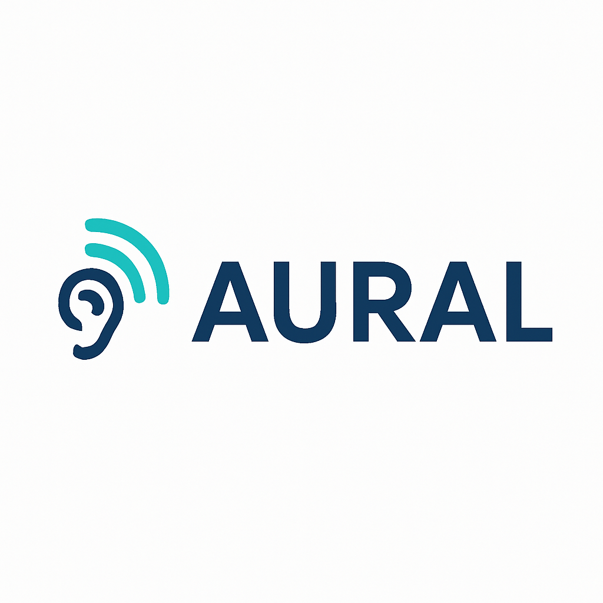

 AI電話オペレーター事業 (AURAL) AIが24時間365日対応。機会損失を防ぎ、安定した顧客対応で競合優位性を確立します。 AURALのホームページはこちら 他社に差をつける競合優位性 人材不足やコスト削減が求められる中、AURALの導入は単なる業務効率化に留まりません。同業他社が抱える「対応の遅れ」「機会損失」「サービス品質のばらつき」を解消し、常に均質かつ迅速なサービスを提供できる体制を築きます。これは顧客満足度を高めるだけでなく、市場でのブランド価値を引き上げ、競合との差別化につながります。導入した企業にしか得られない独自の強みこそ、AURALが提供する最大の価値です。 導入も運用もスムーズな柔軟性 AURALは、小規模な導入から大規模な拡張まで柔軟に対応可能です。企業の成長段階や業種・業態に合わせてフィットし、必要な規模で活用できる安心の仕組みを提供します。長期的な利用にも耐えうる拡張性を備えているため、将来の事業計画にもしっかりと寄り添います。 ご相談・お問い合わせ AURALの導入や活用方法について、まずはお気軽にお問い合わせください。専門のスタッフが丁寧に対応いたします。